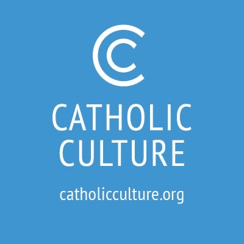
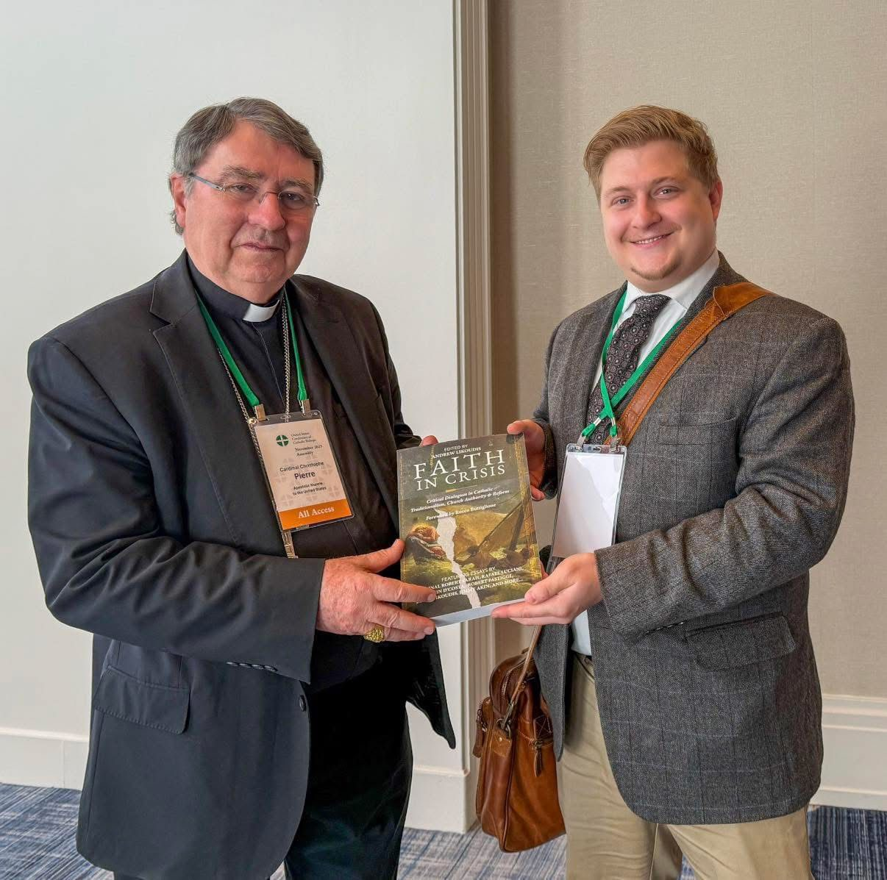
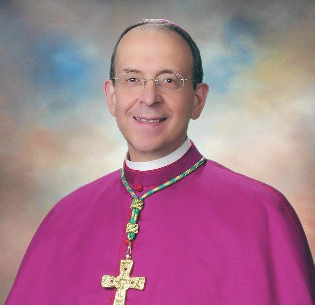
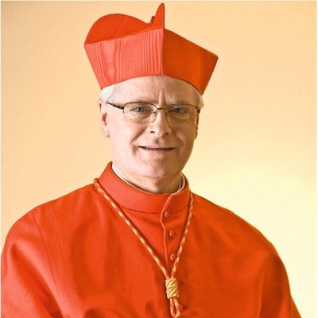
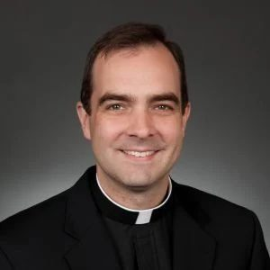
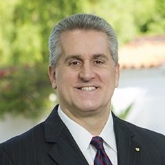
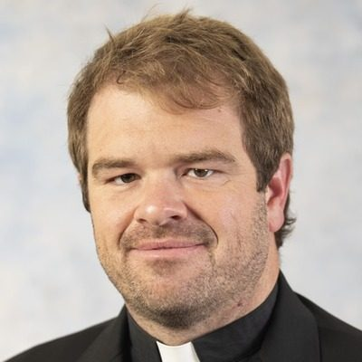
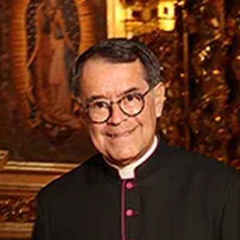

2025
Faith in Crisis
Critical Dialogues in Catholic Traditionalism, Church Authority, and Reform
Bringing together 30+ Catholic voices including Robert Cardinal Sarah, Mike Aquilina, Jimmy Akin, Timothy O'Malley, and Dave Armstrong.
Featured at



The Story Behind the Book
A profound crisis of faith has gripped many in the Church today, leaving the faithful, as this book's introduction puts it, "like passengers in a storm-tossed boat—disoriented, unmoored, and struggling to trust in the Church's teaching, her mission, and the very foundations of a faith that once felt immovable." Hans Urs von Balthasar diagnosed the underlying problem decades ago: "The most worrisome thing in the situation of the Church today may be that the left wing, which is quite chaotic but strong in the media, is confronted on the right by a large number of diligent but more or less introverted sect-like formations, all of which claim to be in the center but that hinder the formation of a superior center that embodies living tradition in a living way… The ecclesia apostolica and sancta is stressed, but the protesting splinter group wants to be at the same time the una, which is impossible, and the catholica, which a mere opposition, of its essence, cannot be." That superior center—one that embodies living tradition in a living way—is what I wanted Faith in Crisis to occupy.
✝ Imprimatur

Official Imprimatur—July 2025
"There is nothing within this work that is contrary to the faith and morals of the Roman Catholic Church."
Most Rev. William E. Lori, S.T.D.
16th Archbishop of Baltimore · America's Premier See View Document →

Endorsements

"I welcome initiatives such as this volume, Faith in Crisis, which seeks to reaffirm ecclesial communion and the authentic meaning of the liturgy. There is only one ‘Mass of the Ages’: the one regulated by the Church’s living Magisterium. To deny the Second Vatican Council is to deny the Catholic faith in the Church itself."† Odilo Pedro Cardinal SchererArchbishop of São Paulo, Brazil; Member, Vatican Dicasteries for Clergy, Evangelization, and Culture & Education
"Faith in Crisis allows us to appreciate, through different voices, how much we need to overcome pharisaical attitudes and rediscover the most elementary thing: Christianity is not a set of values, but a living Person encountered in the Church."Rodrigo Guerra, PhDSecretary, Pontifical Commission for Latin America; Professor, Pontifical Lateran University
Member, Pontifical Academy for Life & Pontifical Academy of Social Sciences
"Faith in Crisis is a vital and timely contribution to understanding the challenges and opportunities facing the Church. With intellectual rigor and clarity, it is essential reading for all dedicated to safeguarding the Church’s sapience while courageously embracing its future."Ines Angeli Murzaku, PhDFounding Chair & Director, Catholic Studies; Professor of Ecclesiastical History, Seton Hall University
Five-Time U.S. Fulbright Scholar · Alexander von Humboldt Research Fellow
"Faith in Crisis takes the objections of traditionalists against Pope Francis seriously and answers them not from the point of view of a superficial progressivism but from that of the true and great Tradition of the Church. The root of this Tradition is not a doctrine, entrusted to the custody of a few scholars. To think so would be to adhere to the heresy of Gnosticism. Rather, it is the event of an encounter with the living person of Jesus of Nazareth, the Son of God... Faith in Crisis is a model of the hermeneutics of reform in continuity recommended by Benedict XVI. Different popes are like great orchestra directors, each one with his distinct personality and each one brings out different aspects of the music. The author of the symphony of the Church, however, is Jesus Christ." — From the ForewordRocco ButtiglioneFriend, Collaborator & Leading Interpreter of Pope St. John Paul II; President, Int'l Academy of Catholic Leaders; Co-Founder, Int'l Academy of Philosophy
Fmr. Italian Minister of European Affairs & Minister of Culture; Vice President, Italian Chamber of Deputies; Member of European Parliament
Director, Chair of Philosophy & History of European Institutions, Pontifical Lateran University; Member, Pontifical Academies of Social Sciences & St. Thomas Aquinas
"The divine genius of the Church is its uncanny ability to retain doctrinal and liturgical integrity in the midst of the vicissitudes of cultures in which the Church must proclaim the Gospel. Faith in Crisis is an important contribution to our appreciation of that genius."Francis J. Beckwith, PhDProfessor of Philosophy & Church-State Studies, Baylor University
"This is a splendid collection... a call to remember that the deepest and most essential resource of Catholic tradition is the law of love, given by him who laid down his life for his brothers and sisters."David Bentley Hart, PhDCollaborative Researcher, University of Notre Dame; Author, All Things Are Full of Gods (Yale, 2024)
"While Catholic tradition is good and beautiful, fundamentalism disguised as traditionalism is false and can be downright ugly. Faith in Crisis has assembled an excellent team of authors to show where this fundamentalism goes wrong."Trent Horn, MAHost of The Counsel of Trent; Author of Why We’re Catholic

"There is a need for mature, sober, thoughtful discussion about the trends affecting the Catholic Church today. I don’t agree with everything in this anthology—and I think that’s the point. Each essay is serious and insightful and contributes to a conversation that needs to happen."Rev. Carter GriffinRector, St. John Paul II Seminary, Washington, DC

"Faith in Crisis is a godsend for our times. Andrew Likoudis has done the Church a great service by presenting the teaching of the living Magisterium, that can serve as a guide for all to truly ‘listen to what the Spirit is saying to the churches’ today."Tim StaplesSenior Apologist, Catholic Answers

"The essays in Faith in Crisis give the reader the gifts of clarity and hope. The reader walks away with a better understanding of how to think about the life of the Church today, and with a deeper conviction that together, by the grace of God, the future is filled with possibility."Rev. Brendan FitzgeraldRector, Basilica of the National Shrine of the Assumption—America’s First Cathedral
"My students need to read this book! It so well addresses confusion among the contemporary generation over authority, tradition, and reform. This book shows how properly understanding the authority of the Church as a gift from the Lord frees us from existential anxiety."Joseph T. Stuart, PhDProfessor of History; Fellow in Catholic Studies,
University of Mary

"Faith in Crisis offers a much-needed resource for the Church. The book will offer profound support for those seeking to unite truth and charity in navigating the most pressing issues facing the Church today."Matthew J. Ramage, PhDProfessor of Theology; Co-director,
Center for Integral Ecology, Benedictine College

"Faith in Crisis proves itself to be a collection of essays born from the minds and hearts of those who have their fingers on the pulse of the Church. More than sixty years since the Second Vatican Council, the Church in the West now finds herself simultaneously in need of deescalating the understandable anger of those who perceive a loss of the sense of the sacred, deepening and clarifying her teachings concerning Tradition and church authority, and undertaking a reform that is truly in conformity with the documents of the Council itself. These essays bespeak careful reflection and due diligence to nuance, in order to start a path toward unity and healing."Deacon Jason Bulman, ThM, MPASDeacon of the Diocese of Orlando
"Faith in Crisis is an important and timely work that helps readers engage difficult questions with faith, courage, and humility."Anne DeSantis, PhDExecutive Director, Raymond Nonnatus Foundation; Author, The Virtue of Affability
"No recent collection of essays better serves the need to understand the Catholic Church and its teachings than Faith in Crisis. This book deserves a place on everyone’s religious bookshelf, and will remain a priceless source of knowledge and insight for many years."William Doino Jr.Catholic Writer and Speaker

"Andrew Likoudis has assembled in Faith in Crisis a collection of essays with scholarly rigor that addresses with remarkable timeliness the dangers of Catholic fundamentalism—the very challenges I have encountered throughout my ministry from those who, claiming to defend tradition, actually undermine the legitimate authority of Vatican II and the Magisterium. Highly recommended."Msgr. Arthur A. Holquin, S.T.L.Rector Emeritus, Mission Basilica San Juan Capistrano; Episcopal Vicar, Diocese of Orange
Notable Contributors
Table of Contents
Traditionalism
- 1.Functionality over Faith: A Modern Crisis
- 2.Lessons from St. Hilary, the "Athanasius of the West"
- 3.Rigorism in the Early Church: The First "Fundamentalists"
- 4.Fundamentalism & Americanism: Obstacles to Thinking with the Church
- 5.Reframing Orthodoxy: Beyond Conservative & Liberal
- 6.Faithfulness, or Rigidity?
- 7.What is Heresy?
- 8.Diagnosing the Malaise of Modernism within Traditionalism
- 9.Private Revelation & Apparition Subculture within Traditionalism
- 10.Clericalism & Spiritual Abuse within Traditionalism
- 11.Trad-adjacent: Radical Catholic Reactionaryism
Church Authority
- 12.Lessons from St. Peter's Papacy
- 13.Collegiality: A Traditional Doctrine
- 14.How Doctrinal Development Happens
- 15.Finding Catholic Orthodoxy
- 16.Thinking with the Mind of the Church
- 17.Catholic Clickbait: Digital Media & Outrage Culture in the Church
- 18.The Ordinary Magisterium & the Question of Dissent
- 19.The Antidote of Trust
- 20.The Spirit of Obedience
- 21.Doctrinal Safety of the Ordinary Magisterium & Religious Obedience
- 22.Heresy in the Pope's Non-definitive Acts? A Defense of a Charism of Safety
Reform
- 23.Vatican II & Theological Paradigms
- 24.Conversion and Reform: Ecclesial Reconfiguration in the Light of Synodality
- 25.Veritatis Splendor Magistra et Amoris Laetitia Matris
- 26.The Death Penalty and Doctrinal Development
- 27.Between Pessimism and Presumption: Hope of Salvation in Church Teaching
- 28.The Church is One: The Irrevocable Commitment to Christian Unity
- 29.Religious Liberty and its Foundation
- 30.Interreligious Dialogue & the Incarnation
- 31.Eastern Philosophy & a Christology of Religions
- 32.Traditionalists' Questions Regarding Catholic Teaching on the Jewish People
- 33.Do Catholics & Muslims Worship the Same God?
- 34.Inculturation & the "Pachamama" Ordeal
- 35.Missiology & Material Culture in the Modern Age
- 36.The Liturgical Reform in Retrospect
- 37.Challenges in Liturgy: Authority, Continuity, & Sectarian Concern
- 38.A Reader's Guide to Pope Francis' Vision of Liturgical Formation
- 39.The Road Ahead: A Call for True Ecclesial Unity
- 40.Taking the Virtuous Path: An Open Letter to Confused Young Catholics